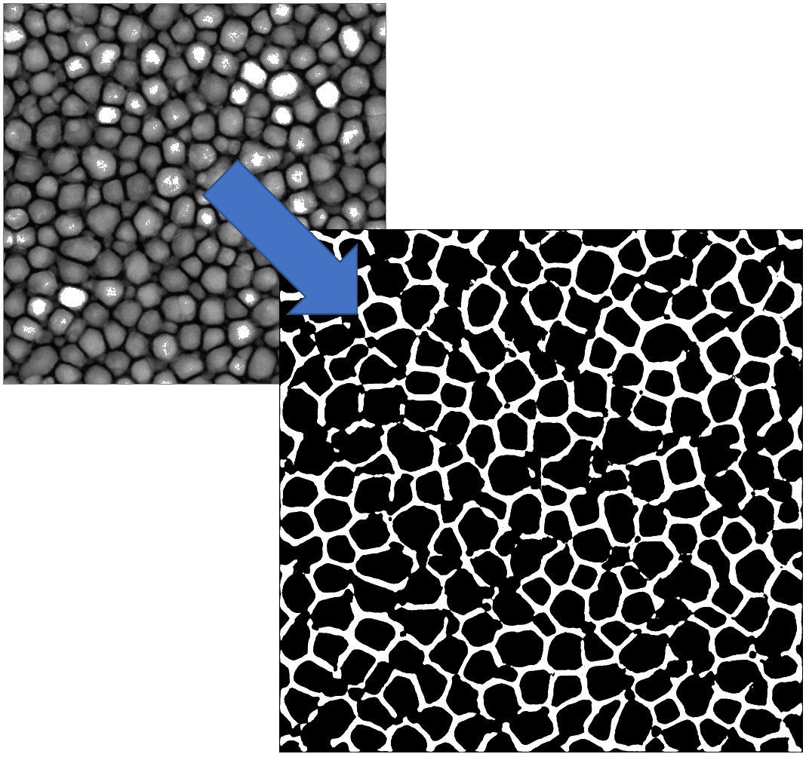
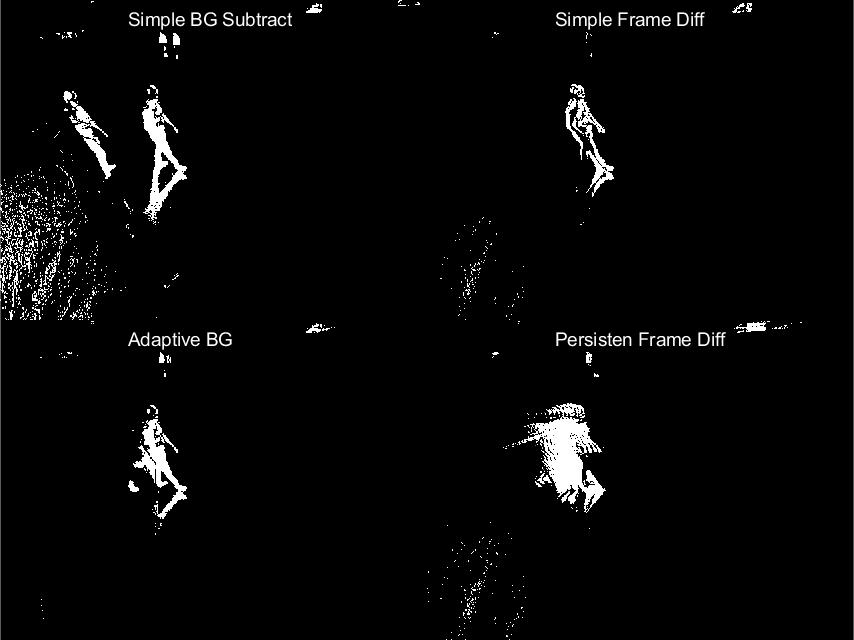

Microstructure Analyzer App - Flask, TensorFlow, Docker

The CAE model seperates the grain pixels (black) and background pixels (white) from a given greyscale image
During my time as a Machine Learning Intern at Western Digital, I worked along our Material Analysis group to develop, train, and deploy a deep learning app into internal production. I consulted Dr. Shikra Jain about a potential use case for a computer vision model she could apply to her every day work. After selecting the Convolution Autoencoder model and the parameter set that efficiently gave the most accurate results, I created a website using Python & Flask that allowed other scientists in her group to analyze their own material images. Other features were included to gather all submitted data for further model training, let researchers upload and switch the current model in use, and a guide & Dockerfile to robustly serve the application.
When deployed, my system decreased the time spent to maunally seperate the grains from 60 minutes to nearly 60 seconds (~15 on systems with a GPU!). The site also performs the grain analysis (average size, average spacing, shape statistics) required for their analysis.
ObjectDetection - Matlab, OpenCV
As a part of my Computer Vision course at Penn State, I implemented four common object detection algorithms; background subtraction, frame differencing, adaptive background subtraction, and persistent frame differencing. Given an input video, the application would collectively run the algorithms and output a video file showing the results of using each method.

An example output frame